Cattle Health · Clinical Examination for Farmers & Veterinary Students
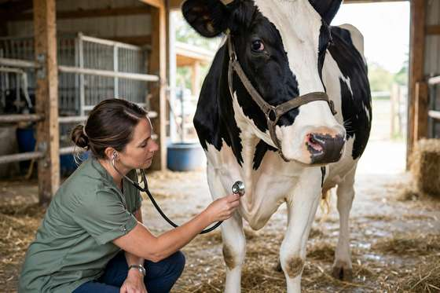
A careful, step-by-step examination is the foundation of every correct diagnosis
A clinical examination is the systematic, step-by-step assessment of an animal to find out what is wrong with it. Every correct diagnosis — and every successful treatment — begins with a careful examination. A cow cannot describe its symptoms, so the examiner must observe, measure and feel, and then put all the findings together.
This guide follows the standard textbook sequence used by veterinarians worldwide: history taking, observation from a distance, vital signs (temperature, pulse and respiration), a systematic examination from head to tail, and finally recording the findings and deciding what to do next. Farmers who learn this routine can detect illness early, describe it accurately to their veterinarian, and save animals that would otherwise be treated too late.
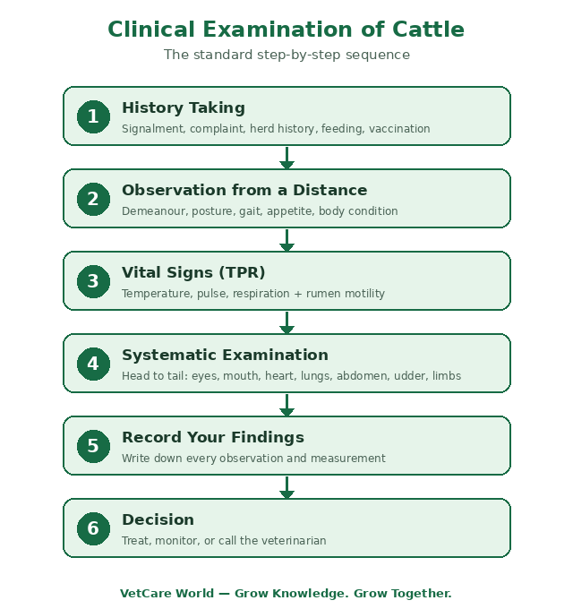
The standard examination sequence — follow the same order every time
1. History Taking
History taking means asking the owner the right questions before touching the animal. A good history often points to the diagnosis before the examination even begins.
Signalment — age, sex, breed, weight and production stage (milking, dry, pregnant, calf)
Main complaint — what problem did the owner notice first, and when did it start?
Duration and progress — is the condition getting better, worse, or staying the same?
Herd history — are other animals affected? Any recent deaths, new animals introduced, or changes in the herd?
Feeding history — what fodder, concentrate and minerals is the animal eating? Any sudden feed change?
Vaccination and deworming — which vaccines and dewormers were given, and when?
Previous treatment — what medicines have already been given, and did they help?
Milk and reproduction — any drop in milk yield, last calving date, heat or breeding history
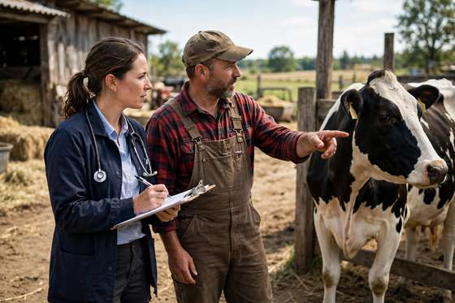
Ask first, examine second — history saves time and prevents repeated treatments
2. Observation from a Distance
Before approaching the animal, watch it quietly from a distance for a few minutes. An undisturbed animal shows its true behaviour; handling can mask the signs.
Demeanour — alert and responsive, or dull, depressed and separated from the herd?
Posture — standing normally, or hunched, lying down unusually, or unable to rise?
Gait — walking freely, or lame, stiff, circling or unsteady?
Appetite and rumination — eating and chewing the cud normally, or off feed with no rumination?
Body condition — well-fleshed, or thin with visible ribs and a dull coat?
Discharges — any nasal, eye or vaginal discharge, drooling, or abnormal dung?
Breathing — quiet and easy, or laboured, rapid or coughing?
Golden rule: always observe first, then examine. A cow that is chased, tied or frightened will have a raised pulse and respiration, and the true clinical picture will be hidden.
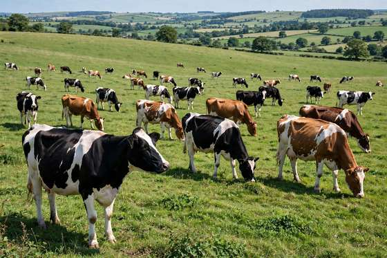
A healthy herd is alert, grazing and ruminating — compare the sick animal with its herdmates
Vital signs are the basic measurements of the body's condition. They should be recorded at every examination, and always interpreted together — never alone.
Vital sign
Normal range (adult cattle)
How to measure
Rectal temperature
38.0–39.3 °C (100.4–102.8 °F)
Digital veterinary thermometer, inserted gently into the rectum
Pulse rate
60–80 beats per minute
Feel the facial artery under the jaw, or listen with a stethoscope over the heart
Respiratory rate
10–30 breaths per minute
Count chest or flank movements for one full minute, from a distance
Rumen motility
1–2 contractions per minute
Stethoscope or closed fist on the left flank, counted over 2 minutes
Temperature: fever (above about 39.5 °C) usually means infection or inflammation. A temperature below normal can be a serious sign in a very sick or newborn animal. Pulse: a fast pulse may indicate fever, pain, dehydration or shock. Respiration: rapid or laboured breathing suggests fever, lung disease or severe pain. Rumen motility: a quiet rumen with weak or absent contractions is one of the earliest signs of illness in cattle.
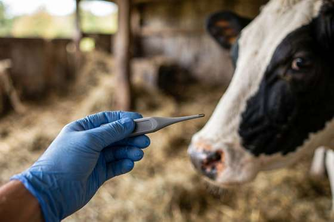
Temperature — 38.0–39.3 °C is normal
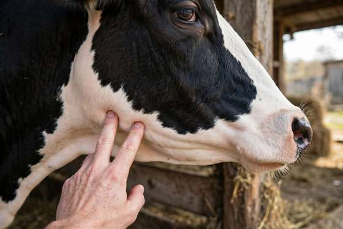
Pulse — 60–80 beats per minute
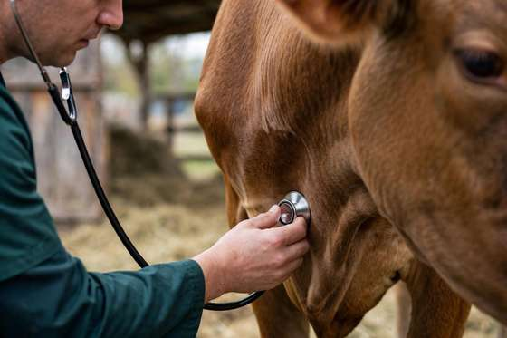
Heart and lungs — listen with a stethoscope
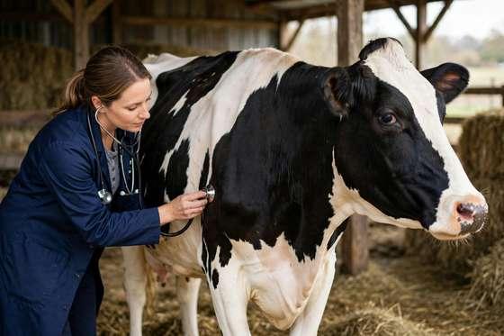
Rumen — 1–2 contractions per minute
4. Systematic Examination — Head to Tail
After the vital signs, examine the whole animal in a fixed order, from head to tail. Working systematically means nothing is missed.
1
Eyes(Bright and clear, or dull, sunken, cloudy or discharging? Check the conjunctiva colour)
2
Nose and muzzle(Moist muzzle is normal; dry, cracked or discharging muzzle suggests fever or disease)
3
Mouth and teeth(Check the gums, tongue and teeth for ulcers, sores, swelling or broken teeth)
4
Lymph nodes(Feel the submandibular, prescapular and prefemoral nodes — enlarged nodes suggest infection)
5
Skin and coat(Shiny coat and supple skin are normal; look for hair loss, wounds, ticks, lice or swellings)
6
Heart and lungs(Listen with a stethoscope for abnormal heart sounds, murmurs, crackles or wheezes)
7
Abdomen(Check the rumen fill, look for bloat, and listen for normal rumen sounds)
8
Udder and teats(Feel for heat, swelling, hardness or pain; check the milk for clots or colour change)
9
Limbs and hooves(Check for swelling, heat or wounds; lift each hoof and inspect the sole and between the claws)
10
Reproductive system(Check the vulva for discharge or swelling; note pregnancy, calving or heat history)
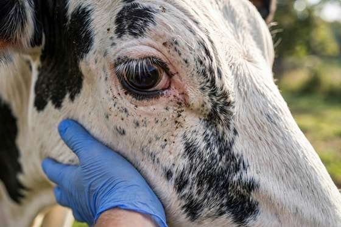
Eyes — bright, clear and alert
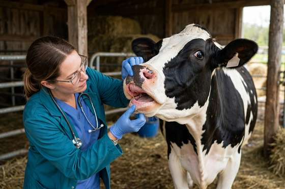
Mouth — check gums, tongue and teeth
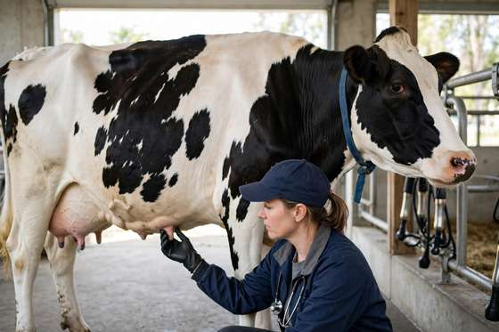
Udder — feel for heat, swelling or pain
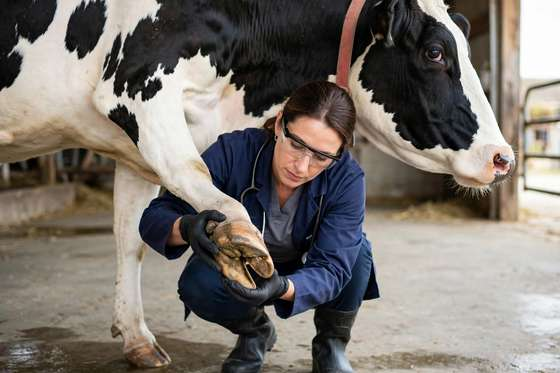
Hooves — inspect the sole and between the claws
5. Mucous Membranes and Capillary Refill Time
The mucous membranes of the eyes and gums are a quick window into the animal's circulation and blood health.
Pink and moist — normal and healthy
Pale or white — may indicate anaemia or blood loss
Yellow (jaundiced) — may indicate liver disease or blood parasites
Blue or muddy — may indicate poor oxygenation or shock
Bright red or congested — may indicate fever or toxaemia
Capillary refill time (CRT): press the gum firmly with a finger for a moment, then release and count how long the colour takes to return. In a healthy cow it returns within 2 seconds. A longer refill time suggests dehydration or poor circulation. Also check skin tenting — pinch a fold of skin on the neck or eyelid; in a dehydrated animal the fold stays raised for several seconds instead of flattening immediately.
Signs of a Healthy vs Sick Animal
Learn to recognise the difference at a glance — early recognition is the most valuable skill a farmer can have.
1
Alert vs dull(Healthy: bright eyes, ears up, responds quickly. Sick: dull, head low, separates from the herd)
2
Normal appetite vs off-feed(Healthy: eats eagerly and ruminates. Sick: refuses feed, stops chewing the cud)
3
Normal temperature vs fever(Healthy: 38.0–39.3 °C. Sick: above 39.5 °C, with shivering or a dry muzzle)
4
Normal rumen sounds vs quiet rumen(Healthy: 1–2 strong contractions per minute on the left flank. Sick: weak or absent rumen sounds)
5
Pink membranes vs pale membranes(Healthy: moist, pink gums and eyes. Sick: pale, yellow or blue membranes, slow capillary refill)
6
Normal dung vs diarrhoea(Healthy: formed dung, passed regularly. Sick: watery dung, blood or mucus, straining, or no dung at all)
Healthy — alert, grazing, ruminatingBright eyes — a sign of health
Check temperature at the first sign of illnessListen to the rumen — silence is a warning sign
Pink gums — healthy circulationWhen in doubt, examine — or call the veterinarian
6. Special Examinations
Sometimes the routine examination is not enough, and the veterinarian uses special examinations to confirm a diagnosis:
Rectal examination — to check pregnancy, the reproductive tract, or the rumen and intestines
California Mastitis Test (CMT) — a quick field test for mastitis in milk
Blood, milk, dung or urine samples — sent to a laboratory for confirmation of disease
Ultrasonography — to confirm pregnancy or examine internal organs
Post-mortem examination — when an animal dies, it can protect the rest of the herd
These examinations are performed by a qualified veterinarian. Farmers should never attempt rectal examinations or take blood samples without proper training.
7. Recording Your Findings
Write down everything you find — a finding that is not recorded is easily forgotten. Good records are the basis of good herd health management.
Date and time of examination, and who examined the animal
History in the owner's own words
Temperature, pulse, respiration and rumen motility
Findings from each body system, in the head-to-tail order
Provisional diagnosis and treatment given, if any
Follow-up plan — when to re-examine, and what to watch for
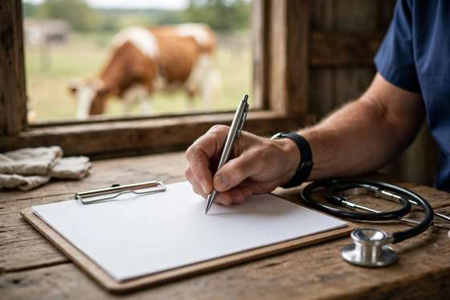
Record every finding — good records protect the whole herd
8. When to Call the Veterinarian
Call your veterinarian without delay if you find any of the following:
Fever above 39.5 °C, or temperature below normal in a sick animal
Complete loss of appetite for more than 24 hours, or no rumination
Difficulty breathing, severe coughing, or blue mucous membranes
Bloat that is getting worse, or severe abdominal pain (kicking at the belly, rolling)
Down and unable to rise, convulsions, or sudden collapse
Bloody dung or urine, or no dung at all
Difficult calving, retained placenta, or heavy bleeding after calving
Several animals in the herd showing the same signs at once
Remember: early treatment is cheaper, simpler and far more successful than late treatment. A veterinarian called on the first day of illness can often save an animal that is lost by the third day. Never give medicines on guesswork — treatment should be as prescribed by a veterinarian.
References
Merck Veterinary Manual — Physical Examination of Cattle.
Radostits, O.M., Gay, C.C., Hinchcliff, K.W. & Constable, P.D. — Veterinary Medicine: A Textbook of the Diseases of Cattle, Horses, Sheep, Pigs and Goats.
Rosenberger, G. — Clinical Examination of Cattle.
Jackson, P. & Cockcroft, P. — Clinical Examination of Farm Animals.
Penn State Extension — Dairy Cattle Health and Physical Examination.
University of Wisconsin–Madison Extension — Evaluating Dairy Cattle Health.
Frequently Asked Questions
What is the normal temperature, pulse and respiration of cattle?
In adult cattle, the normal rectal temperature is 38.0 to 39.3 degrees Celsius, the pulse rate is 60 to 80 beats per minute, and the respiratory rate is 10 to 30 breaths per minute. Calves normally have slightly higher values. Temperature, pulse and respiration should always be recorded together, because a change in one vital sign is best interpreted alongside the others.
What is the correct order of a clinical examination in cattle?
The standard sequence is: history taking, observation from a distance, measurement of vital signs (temperature, pulse and respiration, plus rumen motility), systematic examination from head to tail, recording of findings, and finally a decision on treatment, monitoring or referral. Following the same order every time prevents important findings from being missed.
How do you check rumen motility in cattle?
Place a stethoscope or a closed fist on the left flank, in the paralumbar fossa, and listen or feel for rumen contractions. A healthy cow has about 1 to 2 strong contractions per minute. Count the contractions over 2 minutes for accuracy. Weak, infrequent or absent rumen movements suggest indigestion, fever or systemic illness and should be reported to a veterinarian.
What do mucous membrane colour and capillary refill time tell you?
Healthy mucous membranes of the eyes and gums are moist and pink. Pale membranes may indicate anaemia or blood loss, yellow membranes suggest jaundice, and blue or muddy membranes indicate poor oxygenation or shock. Capillary refill time is checked by pressing the gum briefly; the colour should return within 2 seconds. A longer refill time suggests dehydration or poor circulation.
Why is history taking important before examining a cow?
History often points to the diagnosis before the animal is even touched. It reveals how long the problem has lasted, whether other animals are affected, what the animal has eaten, and what vaccination, deworming or treatment it has already received. A good history saves time, focuses the examination and prevents treatments from being repeated unnecessarily.
How can I check if my cow has fever at home?
Use a digital veterinary thermometer. Shake or reset it, lubricate the tip, and insert it gently into the rectum for the time the manufacturer recommends. The normal temperature of a cow is 38.0 to 39.3 degrees Celsius. A reading above 39.5 degrees usually means fever — keep the cow in shade, give clean water and call your veterinarian. Do not give any medicine without veterinary advice.
What are the first signs that my cow is sick?
The earliest signs are usually simple: the cow goes off feed, stops ruminating, becomes dull or separates from the herd, and milk yield drops. Other early signs are dry muzzle, dull coat, abnormal dung, fever, or a quiet rumen with no sounds on the left side. If you notice two or more of these signs together, examine the animal properly and call your veterinarian early — early treatment is cheaper and more successful.
گائے کا طبی معائنہ کیسے کیا جاتا ہے؟
گائے کا معائنہ ہمیشہ ایک ترتیب سے کیا جاتا ہے۔ پہلے مالک سے جانور کی بیماری کی تاریخ پوچھی جاتی ہے، پھر دور سے جانور کا رویہ، چال اور بھوک دیکھی جاتی ہے۔ اس کے بعد درجہ حرارت، نبض اور سانس کی رفتار ناپی جاتی ہے اور معدے کی حرکت سنی جاتی ہے۔ پھر سر سے پاؤں تک پورا جسم چیک کیا جاتا ہے — آنکھیں، منہ، دل، پھیپھڑے، پیٹ، تھن اور کھر۔ آخر میں تمام نتائج لکھے جاتے ہیں اور علاج یا ڈاکٹر سے مشورے کا فیصلہ کیا جاتا ہے۔
Key Takeaway
Clinical examination follows one fixed order: history, observation, vital signs (TPR + rumen motility), systematic head-to-tail examination, recording, and decision. Learn the normal values — temperature 38.0–39.3 °C, pulse 60–80/min, respiration 10–30/min, rumen 1–2 contractions/min — and examine early at the first sign of illness. When in doubt, call your veterinarian. Follow current local veterinary authority guidance.